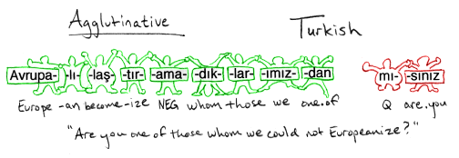
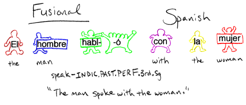
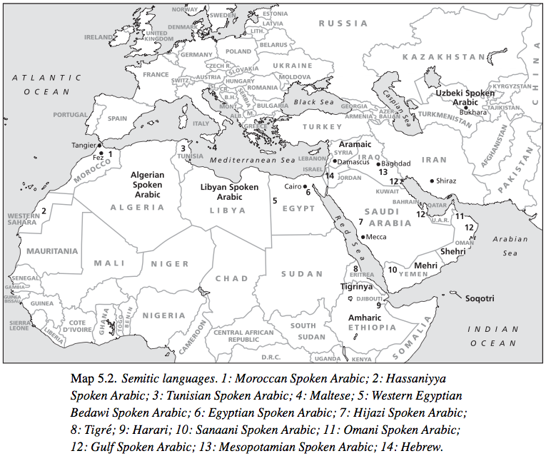
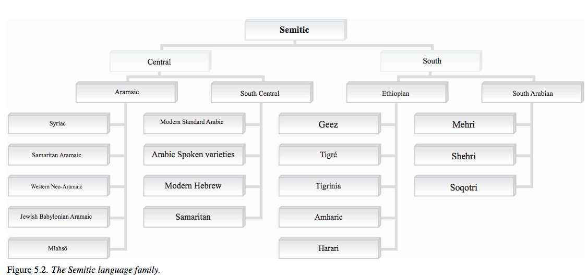
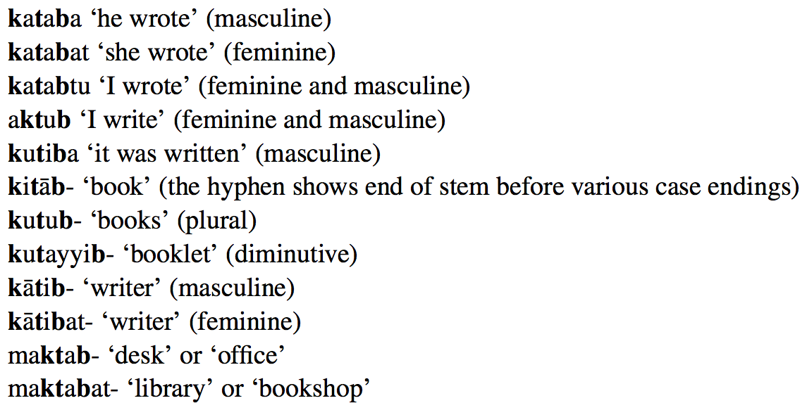
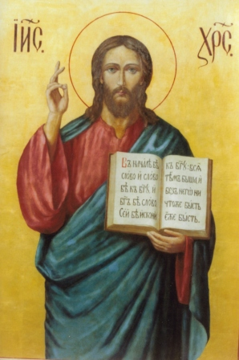
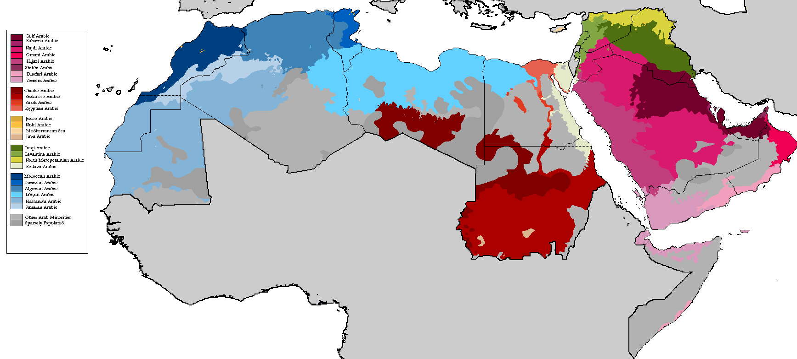
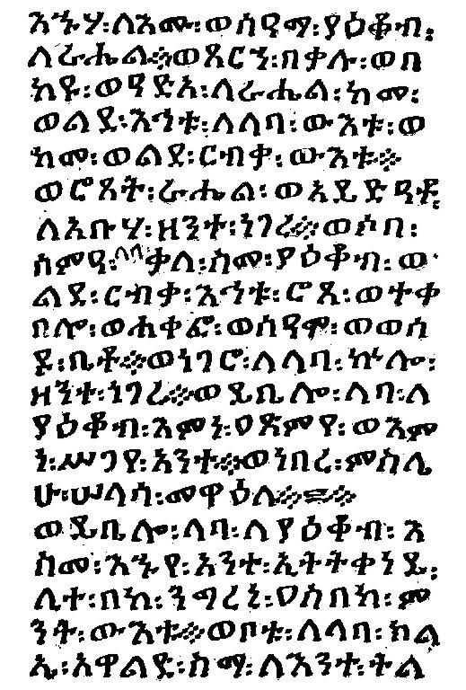

<lang>Kurdish</lang><br><ldata>IE:Indo-Iranian - Iraq/Turkey</ldata> <iframe data-autoplay width="840" height="690" src="http://www.youtube.com/embed/RdO4vMzkfwQ"></iframe> --- # Turkic and Semitic Languages ### LING 1020 - Will Styler --- ### The review sheet for the midterm is online! * One of the long-answer questions *will be on the test*! * I eliminated two last night. It's just 6 now. --- ## Today's Agenda * Morphological Type * Isolating vs. Synthetic * Agglutinating vs. Fusional * Turkic Languages! * Semitic Languages! --- ## Morphological Type --- ### Morphology The study of how words are put together --- ### Morphological Type A means of categorizing how languages put words together --- We care about two "dimensions": * ***Do words have lots of morphemes or few?*** * ***If they have multiple morphemes, do they blend together, or are they easy to pick apart?*** --- ### Do words have lots of morphemes or few? * If words have few morphemes (like English or Chinese), they're "isolating" * If they have many (like Spanish or German), they're "synthetic" * Languages where whole sentences are single words are sometimes called "polysynthetic" --- <lang>English</lang><br><ldata>IE:Germanic - All over</ldata> I did see the cat on the street, he's cute. 1sg did see DEF cat on DEF street 3sg-be.3sg cute. * Only one morpheme in most words! ***This is Isolating!*** --- <lang>Spanish</lang><br><ldata>IE:Italic - All over</ldata> *Esta escribiéndomelo* be.3sg write-GER-1sg.DAT-3sg.MASC 'He/she is writing it to me.' * Lots of morphemes per word! ***This is Synthetic!*** --- <lang>Wichita</lang><br><ldata>Caddoan - Oklahoma</ldata> Kiyakiicíwa:cé:hirʔasʔirhawi ‘There was the big buffalo lying there.’ * Uh... yeah. ***This is polysynthetic!*** --- ### In a synthetic language, do the morphemes blend together, or are they easy to pick apart? * If they're glued together loosely, it's "agglutinating" * If they merge inseparably, it's "fusional". --- <lang>Turkish</lang><br><ldata>Turkic - Turkey</ldata> <img src="lotwimg/agglutinatingturkish.png"> * Those add together cleanly, and pick back apart. We're ***agglutinating***! --- <lang>German</lang><br><ldata>IE:Germanic - Germany</ldata> *Donaudampfschifffahrtselektrizitätenhauptbetriebswerkbauunterbeamtengesellschaft* Donau-dampf-schiff-fahrts-elektrizitäten-haupt-betriebs-werk-bau-unter-beamten-gesellschaft Danube-steam-ship-transport's-electricities-head-operation's-work-building-under-officials-association * Look at those clean lines! ***Agglutinative!*** --- <lang>Russian</lang><br><ldata>IE:Slavic - Russian</ldata> Ti uhodila co mnoi Ti u-hodi-la co mnoi 2sg.NOM away-go.IMPERF-past.FEM with 1sg.INST "You left with me" * Uh-oh! Those morphemes mean lots of things! Russian's ***Fusional!*** --- <lang>Spanish</lang><br><ldata>IE:Italic - All over</ldata> Durmiéramos Durmiéramos Sleep.2pl.SUBJ.PAST.IMPERFECT * Whoa. All that is one morpheme? No easy lines? ***Fusion*** drives engaged! --- ## Why does Robin Thicke prefer agglutinating languages? * ### Because he hates blurred lines. * (Not because he's creepy and misogynistic) --- ### Both "agglutinating" and "fusional" are types of "synthetic" * Neither term applies to highly isolating languages * "How do you string together morphemes in languages which don't string morphemes together?" --- ### It's always a continuum * English is isolating, but Mandarin is *more* isolating * Same with Synthetic: Nobody's besting Wichita, but we don't hold it against them. * Most languages do *some* fusion and *some* agglutination * We call a language fusional or agglutinating when it becomes a habit --- ### Morphological Type - Review! <img width="900px" src="lotwimg/comic_isolating.gif"> <small>Thanks, [SpecGram!](http://specgram.com/CLII.3/09.phlogiston.cartoon.3.html)</small> --- ### Morphological Type - Review!  <small>Thanks, [SpecGram!](http://specgram.com/CLII.3/09.phlogiston.cartoon.3.html)</small> --- ### Morphological Type - Review!  <small>Thanks, [SpecGram!](http://specgram.com/CLII.3/09.phlogiston.cartoon.3.html)</small> --- ### Morphological Type - Review! * If a language has few morphemes per word, it's *isolating* * If the language has multiple morphemes per word, it's *synthetic* * If a synthetic language has easy-to-pick-apart morphemes, it's *agglutinating* * If a synthetic language has blended or combined morphemes, it's *fusional* --- <section data-background="img/clickerbkgrnd.png"></section> *Maratha halatar sallabeorn nsaah* Mara-tha hala-tar sal-la-beorn nsa-ah hamster-ERG drug.dealer-ABS report-PAST-3SG NSA-DAT "The Hamster reported the drug dealer to the NSA" **This language is:** a) Isolating b) Synthetic, Aggulatinating c) Synthetic, Fusional --- <section data-background="img/clickerbkgrnd.png"></section> *yesika kan yer pikula faret rundi Michael Bay* yesika kan yer pikula faret rundi Michael Bay Jessica watch yesterday movie ruined from Michael Bay "Jessica watched a movie which Michael Bay ruined" **This language is:** a) Isolating b) Synthetic, Aggulatinating c) Synthetic, Fusional --- <section data-background="img/clickerbkgrnd.png"></section> *harestats T-Rex prostatimfibulartha* hare-stats T-Rex prostat-im-fibul-artha google-3sg.inanimate.past.IMP T-Rex.NOM prosthetic-PL-ARM.inanimate-extend.3PL.Inanimate.ACC "The T-Rex googled "Prosthetic Arm Extensions"" **This language is:** a) Isolating b) Synthetic, Aggulatinating c) Synthetic, Fusional --- Speaking of heavily agglutinating... --- # Turkic Languages! --- ## They're not just Turkish! --- <img class="big" src="lotwimg/turkicmap.png"> --- <img class="big" src="lotwimg/turkicfamily.png"> --- ### Turkic * Turkic is one of the top-level language families * (Although we're thinking it's grouped with Mongolic, Tungusic, Koreanic, Japonic under *Altaic*) * ~35 Turkic languages, depending where you draw the line * Over 200 million speakers of Turkic * Turkish has the most speakers, followed by Azeri, Uzbek, Kazakh, and Uyghur --- ### Features of Turkic Languages * Agglutinative Morphology * SOV order * *No* grammatical gender * Evidentials! * Vowel Harmony! --- ### Aggultinative Morphology Been there, done that... --- ### Got the Agglutinating T-Shirt! <img src="lotwimg/agglutinating_shirt.jpg"> <!-- .element: class="fragment" --> --- ### (as opposed to the fusional t-shirt) <img src="lotwimg/fusional_shirt.jpg"> <!-- .element: class="fragment" --> --- ### SOV Order! --- ### *No* grammatical gender at all! * (Unlike the surrounding languages) --- ### Evidentiality Marking Describes the speaker's knowledge of the topic under discussion --- ### There are different ways to code Evidentiality * Inferentiality ("I know it" vs. "I inferred it") * (This is what the Turkic languages are doing) * Evidentiality (direct vs. circumstantial vs. hearsay vs. assumption) * (Some languages have a different morpheme for each) --- <lang>Turkish</lang><br><ldata>Turkic - Turkey</ldata> * 'gel-di' "He came" * 'gel-miş' "He came, to the best of my knowledge" --- ### Vowel Harmony When vowels change to match the other vowels in the word --- ### Tukish has back-front vowel harmony * This means that vowels in a word must be either *all back* or *all front* <img class="big" src="lotwimg/turkishvowels.png"> <!-- .element: class="fragment" --> --- <lang>Turkish</lang><br><ldata>Turkic - Turkey</ldata> *Türkiye’dir* - ‘it is Turkey’ * *kapidir* - ‘it is the door’ * *gündür* - ‘it is day’ * *paltodur* -‘it is the coat’ * *The vowel in the last syllable changes depending on the other vowels!* --- Let's hear some Turkic Languages! --- <lang>Uyghur</lang><br><ldata>Turkic - China</ldata> <iframe data-autoplay width="840" height="690" src="http://www.youtube.com/embed/ZwnRFNpnRME"></iframe> --- ### The Uyghurs are trying to separate from China <img class="big" src="lotwimg/eastturkestan.gif"> * (China's [trying very hard to stop this](http://www.cnn.com/2014/09/17/world/asia/china-uyghur-scholar-trial/)) --- <lang>Tuvan</lang><br><ldata>Turkic - Central Russia</ldata> <iframe data-autoplay width="840" height="690" src="http://www.youtube.com/embed/TVyyhHFKI8E"></iframe> --- (Tuvans don't always do that, but throat-singing is just too cool not to show) --- I have no idea how to smoothly transition into... --- # Semitic Languages! ---  ---  --- ### Semitic Languages * Maybe top-level, maybe "Afroasiatic" * Widely spoken (~475 million speakers!) --- ### Semitic Languages * Arabic (all dialects) - 300 million speakers * Amharic (Ethiopia) - 21 million * Hebrew (Israel) - 7 million * Tigrinya (Ethiopia) - 6.5 million * Aramaic (Middle East) - 550,000 --- ### Features of Semitic * Case * Emphatic Consonants * Templatic Morphology --- ### Case Semitic languages usually have NOM, ACC, and Genitive --- ### Emphatic Consonants Consonants produced with a secondary *pharyngeal* articulation in the back of the mouth <img class="big" src="phonmedia/sagittalsection.png"> --- *"I'm not even going to try and pronounce these"* - Will <img class="big" src="humorimg/cheese_fail.jpg"> <!-- .element: class="fragment" --> --- <lang>Arabic</lang><br><ldata>Semitic - All over</ldata> تين (figs) - طين (mud) سور (fence) - صور (Tyre, city in Lebanon) ذل (humiliation) - ظل (shadow) (or watch [this video](http://www.youtube.com/watch?v=HIVLfdRxdeI)) --- ## Templatic Morphology! --- ### Templatic Morphology Words are formed by inserting and replacing sounds into different parts of the word --- <lang>Arabic</lang><br><ldata>Semitic - All over</ldata>  k_t_b = "book" --- <lang>Arabic</lang><br><ldata>Semitic - All over</ldata> <img src="lotwimg/template2.png"> k_t_v = "write" --- ### Templatic Morphology * Word roots are "incomplete", and are turned into words by filling in the blanks * Words sharing a set of consonants (root) will have similar meanings * All Semitic languages use templatic morphology * If you find a language doing this, it's likely Semitic --- <section data-background="img/clickerbkgrnd.png"></section> You come upon a language which displays Templatic Morphology. 'Jeleb' means "Duck". 'Jalob' means "To quack". 'Julab' likely means... a) Paper Towel b) Communism c) Goose d) Basket e) Sunglasses --- So, about those Semitic Languages... --- ### Hebrew * Died as a spoken language in 1st to 4th Centuries CE * Survived only as a liturgical language in Judaism * Resurrected (rebuilt, reconstructed) in the 19th Century * Now has around 7 million speakers * One of Israel's official languages * (World's most popular ConLang?) * Hebrew has a particularly famous speaker... --- * Borat's "Kazakh" is actually Hebrew --- ... and maybe Jesus  <small>(Hebrew was a holy language, so although Jesus likely *knew* Hebrew, he likely seldom spoke it)</small> <!-- .element: class="fragment" --> --- ### Arabic * Around 300 million speakers around the world * Many different dialects ---  --- ### Arabic Around 300 million speakers around the world Many different dialects * All are written using the Arabic script * Written Right-to-left --- **English** All human beings are born free and equal in dignity and rights. They are endowed with reason and conscience and should act towards one another in a spirit of brotherhood. **Arabic** يولد جميع الناس أحراراً متساوين في الكرامة والحقوق، وقد وهبوا عقلاً وضميراً وعليهم أن يعامل بعضهم بعضاً بروح الإخاء.1 --- ### Arabic too has a particularly well known speaker --- ### The Prophet Muhammad spoke Arabic <img class="big" src="lotwimg/quran.jpg"> * ... and Arabic is the language of the Quran --- <lang>Aramaic</lang><br><ldata>Semitic - Ethiopia</ldata> * Around since ~500 BCE * Used by the Neo-Assyrians, Neo-Babylonians, Achaemenids * Language of the books of Daniel and Ezra * Used in the Dead Sea Scrolls (although Jewish Aramaic is different) * Modern Aramaic is still spoken (although it's endangered) * Aramaic has a particularly famous speaker --- <small>(Although he probably also spoke Hebrew, Koine Greek, and maybe Latin)</small> <!-- .element: class="fragment" --> --- ### "The Passion of the Christ" * Mel Gibson's 2004 "the Passion of the Christ" is done mostly in "Aramaic" * This is reconstructed old Aramaic, with blanks filled in from 4th Century Aramaic * So, Jesus *might* understand what they were saying in that movie --- ... and a less well-known Semitic language! --- <lang>Amharic</lang><br><ldata>Semitic - Ethiopia</ldata> <iframe data-autoplay width="840" height="690" src="http://www.youtube.com/embed/512Y81UG71E"></iframe> --- ### Amharic * Spoken by 25 million people in Ethiopia * Uses ejectives instead of emphatic consonants * Considered a sacred language by Rastafarians * 'Ras' is an Amharic Honorific, and 'Tafari' is the founder's born name * It has an awesome writing system too! ---  --- ### Wrapping up! * We classify languages by morphological type * Isolating vs. Synthetic * Agglutinating vs. Fusional * Turkic Languages are awesome * Know their features * Semitic Languages are also awesome * Know their features, too! --- ## In Recitation: Watch languages evolve before your very eyes! --- ## Next time: Nilo-Saharan Languages! <correct>Pereltsvaig Ch. 6.1</correct> <danger>This has changed on the schedule!</danger> --- <huge>Thank you!</huge> http://savethevowels.org/world/slides/lotw_9.html